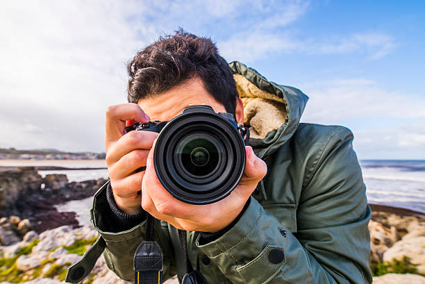

Прочетете внимателно тази информация
Фотографски клуб „Фокус“ е създаден с идеята да събере хора, които искат да се развиват във фотографията и да се учат чрез практика. Много хора започват да снимат, но бързо се сблъскват с един и същ проблем – не знаят как да подобрят снимките си.
В клуба работим именно върху това.
Чрез практически упражнения участниците научават как да използват светлината, как да изграждат добра композиция и как да улавят интересни моменти. Всяка среща включва кратка теория, но основният фокус е практиката.

Фотографски клуб „Фокус“ не е просто място, където се учим да снимаме. Това е пространство, в което хората започват да гледат на света по различен начин. След известно време участниците започват да забелязват детайли, които преди са им убягвали – интересна светлина върху сграда, необичайна перспектива на улицата или израз на лице, който трае само секунда.
В клуба насърчаваме всеки участник да развива собствен стил. Някои се интересуват повече от пейзажна фотография, други от портрети или градска среда. Именно това разнообразие прави срещите интересни, защото всеки показва различна гледна точка към света.
Често работим и върху това как една серия от снимки може да разкаже история. Например чрез няколко кадъра може да се покаже атмосферата на едно място, живота в един квартал или промяната на светлината през деня. Така фотографията се превръща не само в техника, а и в начин за изразяване на идеи.
Клубът също така създава приятелска среда, в която участниците се чувстват свободни да експериментират и да пробват нови неща. Понякога най-интересните снимки се получават именно когато човек излезе извън обичайния си стил.